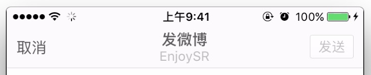

// MARK: - 懒加载
/// 顶部标题视图
private lazy var titleView: UILabel = {
let label = UILabel()
// 设置多行
label.numberOfLines = 0
// 字体大小
label.font = UIFont.systemFontOfSize(14)
// 文字居中
label.textAlignment = NSTextAlignment.Center
// 如果有用户昵称
if let name = HMUserAccountViewModel.sharedInstance.userAccount?.name {
// 初始化一个带有属性的文字
var attr = NSMutableAttributedString(string: "发微博\n\(name)")
// 获取到要添加的属性的范围
let range = (attr.string as NSString).rangeOfString(name)
// 添加属性
attr.addAttribute(NSFontAttributeName, value: UIFont.systemFontOfSize(12), range: range)
attr.addAttribute(NSForegroundColorAttributeName, value: UIColor.lightGrayColor() ,range: range)
label.attributedText = attr
}else{
label.text = "发微博"
}
label.sizeToFit()
return label
}()
/// 右边按钮
private lazy var rightButton: UIButton = {
let button = UIButton()
// 添加点击事件
button.addTarget(self, action: "send", forControlEvents: UIControlEvents.TouchUpInside)
// 设置文字属性
button.titleLabel?.font = UIFont.systemFontOfSize(13)
button.setTitle("发送", forState: UIControlState.Normal)
// 设置不同状态的文字
button.setTitleColor(UIColor.grayColor(), forState: UIControlState.Disabled)
button.setTitleColor(UIColor.whiteColor(), forState: UIControlState.Normal)
// 设置不同状态的背景图片
button.setBackgroundImage(UIImage(named: "common_button_white_disable"), forState: UIControlState.Disabled)
button.setBackgroundImage(UIImage(named: "common_button_orange"), forState: UIControlState.Normal)
button.setBackgroundImage(UIImage(named: "common_button_orange_highlighted"), forState: UIControlState.Highlighted)
// 设置宽高
button.height = 30
button.width = 44
return button
}()
send 方法@objc private func send(){
printLog("发送")
}
// 设置导航栏内容
private func setupNav(){
// 设置左边 Item
navigationItem.leftBarButtonItem = UIBarButtonItem.item(title: "返回", target: self, action: "back")
// 设置中间 titleView
navigationItem.titleView = titleView
// 设置右边 Item
navigationItem.rightBarButtonItem = UIBarButtonItem(customView: rightButton)
// 默认为不可用状态
navigationItem.rightBarButtonItem?.enabled = false
}
运行测试
class HMTextView: UITextView {
/// 重写的是指定构造函数
override init(frame: CGRect, textContainer: NSTextContainer?) {
super.init(frame: frame, textContainer: textContainer)
// 添加占位控件
addSubview(placeholderLabel)
// 添加约束
placeholderLabel.snp_makeConstraints { (make) -> Void in
make.width.lessThanOrEqualTo(self.snp_width).offset(-10)
make.leading.equalTo(self.snp_leading).offset(5)
make.top.equalTo(self.snp_top).offset(8)
}
}
required init?(coder aDecoder: NSCoder) {
fatalError("init(coder:) has not been implemented")
}
// 占位文字控件
private lazy var placeholderLabel: UILabel = {
let label = UILabel()
// 设置文字颜色以及大小
label.font = UIFont.systemFontOfSize(12)
label.textColor = UIColor.lightGrayColor()
label.text = "请输入文字"
// 多行
label.numberOfLines = 0
return label
}()
}
// 懒加载控件
private lazy var textView: HMTextView = {
let textView = HMTextView()
return textView
}()
// setupUI 方法中添加子控件并设置约束
view.addSubview(textView)
textView.snp_makeConstraints { (make) -> Void in
make.edges.equalTo(self.view.snp_edges)
}
运行测试
HMTextView 中提供给外界设置占位文字的属性// 添加 placeholder 属性，代外界设置值
var placeholder: String? {
didSet{
placeholderLabel.text = placeholder
}
}
font 属性，以让占位文字与输入的文字字体大小一样override var font: UIFont? {
didSet{
placeholderLabel.font = font
}
}
textView.font = UIFont.systemFontOfSize(16)
运行测试：占位文字与输入的文字一样大
// 监听文字改变的通知
NSNotificationCenter.defaultCenter().addObserver(self, selector: "textDidChange", name: UITextViewTextDidChangeNotification, object: self)
/// 文字改变的时候会调用这个方法，当前如果有文字的话就隐藏占位 label
@objc private func textDidChange(){
placeholderLabel.hidden = hasText()
}
运行测试。注：监听文字改变在这个地方不要使用代理，因为自己一般不成为自己的代理。
HMComposeToolBar 继承于 UIStackViewclass HMComposeToolBar: UIStackView {
override init(frame: CGRect) {
super.init(frame: frame)
// 设置布局方向 水平
axis = UILayoutConstraintAxis.Horizontal
// 设置子控件的分布方式 宽度相等并且填充
distribution = UIStackViewDistribution.FillEqually
// 设置背景颜色
backgroundColor = UIColor(patternImage: UIImage(named: "compose_toolbar_background")!)
}
required init?(coder aDecoder: NSCoder) {
fatalError("init(coder:) has not been implemented")
}
}
HMComposeViewController 中懒加载控件/// composeToolBar
private lazy var composeToolBar: HMComposeToolBar = HMComposeToolBar(frame: CGRectZero)
HMComposeViewController 的 setupUI 方法中添加控件与约束view.addSubview(composeToolBar)
// 添加约束
composeToolBar.snp_makeConstraints { (make) -> Void in
make.bottom.equalTo(self.view.snp_bottom)
make.width.equalTo(self.view.snp_width)
make.height.equalTo(44)
}
运行测试：并不能看到控件，背景颜色设置失败，原因：UIStackView 是 UIView 的非渲染型子类(通俗的说，他光靠自己是不能显示东西的)，所以设置背景颜色失效
HMComposeToolBar 添加向当前 view 添加子控件的方法 addChildItem/// 添加子控件
private func addChildItem(imageName: String) {
let button = UIButton()
// 设置不同状态的图片
button.setImage(UIImage(named: imageName), forState: UIControlState.Normal)
button.setImage(UIImage(named: "\(imageName)_highlighted"), forState: UIControlState.Highlighted)
// 设置背景颜色
button.backgroundColor = UIColor(patternImage: UIImage(named: "compose_toolbar_background")!)
// 添加到当前 view 中去
addArrangedSubview(button)
}
注：此处添加子控件的方法是
addArrangedSubview，在 UIStackView 中使用addSubview方法无效
initWithFrame 调用 setupUI 方法private func setupUI(){
addChildItem("compose_toolbar_picture")
addChildItem("compose_mentionbutton_background")
addChildItem("compose_trendbutton_background")
addChildItem("compose_emoticonbutton_background")
addChildItem("compose_add_background")
}
运行测试
// 监听键盘 frame 改变通知
NSNotificationCenter.defaultCenter().addObserver(self, selector: "keyboardWillChangeFrame:", name: UIKeyboardWillChangeFrameNotification, object: nil)
deinit{
NSNotificationCenter.defaultCenter().removeObserver(self)
}
/// 键盘 frame 改变通知调用的方法
@objc private func keyboardWillChangeFrame(noti: NSNotification){
let endFrame = (noti.userInfo![UIKeyboardFrameEndUserInfoKey] as! NSValue).CGRectValue()
// 更新约束
composeToolBar.snp_updateConstraints { (make) -> Void in
make.bottom.equalTo(self.view.snp_bottom).offset(endFrame.origin.y - self.view.height)
}
UIView.animateWithDuration(0.25) { () -> Void in
self.composeToolBar.layoutIfNeeded()
}
}
textView.alwaysBounceVertical = true
textView.delegate = self
func scrollViewDidScroll(scrollView: UIScrollView) {
self.view.endEditing(true)
}
textViewDidChange 的方法，当textView有文字输入的时候右边按钮可用func textViewDidChange(textView: UITextView) {
self.navigationItem.rightBarButtonItem?.enabled = textView.hasText()
}
运行测试
代理实现枚举+按钮 来区分/// 区分各个按钮的枚举
enum ComposeToolBarButtonType: Int {
case Picture = 0 // 图片
case Mention = 1 // @
case Trend = 2 // 话题
case Emoticon = 3 // 表情
case Add = 4 // 加号
}
addChildItem 方法添加传入当前按钮是什么类型的参数/// 添加子控件
///
/// - parameter imageName: 图片名字
/// - parameter type: 当前按钮的类型
///
private func addChildItem(imageName: String, type: ComposeToolBarButtonType) {
let button = UIButton()
// 设置枚举值
button.tag = type.rawValue
...
// 添加到当前 view 中去
addArrangedSubview(button)
return button
}
private func setupUI(){
addChildItem("compose_toolbar_picture", type: .Picture)
addChildItem("compose_mentionbutton_background", type: .Mention)
addChildItem("compose_trendbutton_background", type: .Trend)
addChildItem("compose_emoticonbutton_background", type: .Emoticon)
addChildItem("compose_add_background", type: .Add)
}
/// 按钮点击协议
protocol HMComposeToolBarDelegate: NSObjectProtocol {
func composeToolBarButtonDidSelected(type: ComposeToolBarButtonType)
}
// 定义代理属性
weak var delegate: HMComposeToolBarDelegate?
addChildItem 方法中，给初始化的按钮添加点击事件button.addTarget(self, action: "childButtonClick:", forControlEvents: UIControlEvents.TouchUpInside)
@objc private func childButtonClick(button: UIButton){
if let delegate = self.delegate {
delegate.composeToolBarButtonDidSelected(ComposeToolBarButtonType(rawValue: button.tag)!)
}
}
HMComposeViewController 中设置 toolBar 的代理，继承协议/// composeToolBar
private lazy var composeToolBar: HMComposeToolBar = {
let toolBar = HMComposeToolBar(frame: CGRectZero)
toolBar.delegate = self
return toolBar
}()
// MARK: - HMComposeToolBarDelegate
func composeToolBarButtonDidSelected(type: ComposeToolBarButtonType) {
switch type {
case .Picture:
printLog("图片")
case .Mention:
printLog("@")
case .Trend:
printLog("话题")
case .Emoticon:
printLog("表情")
case .Add:
printLog("加号")
}
}
运行测试